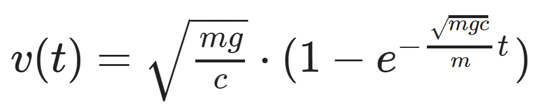

04 Teach: Team Activity
Overview
For this team activity, you will work together to implement a fairly complicated Physics formula.
This example was chosen to give you something more interesting and involved than standard, simplistic examples like the area of shapes, to show you that you are capable of solving real-world math and science problems in the programs you are writing.
Keep in mind that even if you don't understand all of the details of the various components in the formula, you can still implement it.
Also, recognize that by extending from only one or two numbers in an expression to many more doesn't change much in your program. It's just a matter of adding more variables—everything else follows the same process.
The Problem
Determine how fast an object will fall.
The Physics
If you release an object (ball, rock, whatever) from rest (or you could throw it) and let it fall through a fluid, the change in speed of the object is affected by several things: the mass of the object, the acceleration due to gravity, the shape of the projectile, the size of the projectile, and the density of the fluid.
The function that computes the speed after "t" seconds have elapsed is given by:
This function could also be written this way:
v(t) = sqrt(mg/c) * (1 - exp((-sqrt(mgc)/m)t))
Where:
m = mass (in kg)
g = acceleration due to gravity (9.8 m/s^2 on Earth, 24 m/s^2 on Jupiter)
t = time (in seconds)
c = 1/2 p A C
p = density of fluid (1.3 kg/m^3 for air, 1000 kg/m^3 for water)
A = cross sectional area of projectile (in square meters)
C = drag constant (0.5 for sphere, 1.1 for cylinder falling on it’s side. You could look it up for other shapes.)
exp = the number e (2.71828) to the given exponent. This can be computed in Python with the Math library function
math.exp(value).sqrt = the square root of the given expression. This can be computed in Python with the Math library function
math.sqrt(value).
An example run of this program may look as follows (user input is shown with an underline):
Welcome to the velocity calculator. Please enter the following:
Mass (in kg): 5
Gravity (in m/s^2, 9.8 for Earth, 24 for Jupiter): 9.8
Time (in seconds): 10
Density of the fluid (in kg/m^3, 1.3 for air, 1000 for water): 1.3
Cross sectional area (in m^2): 0.01
Drag constant (0.5 for sphere, 1.1 for cylinder): 0.5
The inner value of c is: 0.003
The velocity after 10.0 seconds is: 67.512 m/s
Assignment
Start by completing the core requirements, then when that part is complete, if you have time, see if you can complete some of the stretch challenges as well.
Core Requirements
Prompt the user for each of the variables described above.
Compute the value for the inner value
cwhich is computed as:c = (1 / 2) * p * A * CDisplay the value
cto three decimal places.Compute and display the overall velocity. Display the value to three decimal places.
Stretch Challenge
Try determining the velocity for a few different objects that you know. For example, you might try a bowling ball, a loaf of bread, and a skydiver.
Hints: You can find the cross sectional area of a bowling ball by using its radius and calculating the area (
pi*r^2). You can approximate the drag constant for a loaf of bread by thinking about it as a cylinder. Do your best to estimate the cross sectional area of a skydiver. Are they falling head first or lying flat? You can look up values for the drag constant of a skydiver.Compare the difference in velocities for two different gravity values (Earth and Jupiter), assuming everything else is the same.
For one of the objects you picked, see if you can determine how long it takes to reach "terminal velocity" which is the fastest that the object will travel, by entering different values for "t" to see where it stops increasing.
Check your guess for the terminal velocity by using Python to compute the terminal velocity, which can be found by determining the velocity
v(t)as timetapproaches infinity. This results in the equation for terminal velocity:v_terminal = sqrt(mg/c)
Sample Solution
When your program is finished, please view the sample solution for this program to compare it to your approach.
You should work to complete this team activity for the one hour period first, without looking at the sample solution. However, if you have worked on it for at least an hour and are still having problems, you may feel free to use the sample solution to help you finish your program.
Sample solution: teach04_sample.py
Submission
When complete, please report your progress in the associated I-Learn quiz.
If you decided to do additional work on the program after your team activity, either by yourself or with others, feel free to include that additional work when you report on your progress in I-Learn.